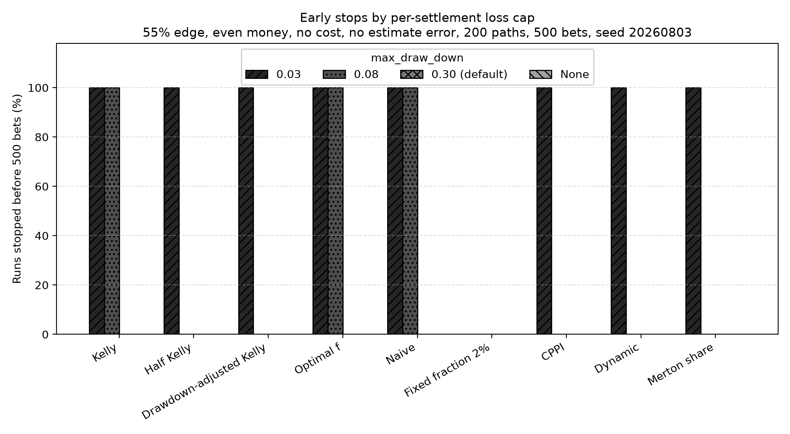

Nine-Strategy Risk Benchmark¶
Every strategy in Keeks implements the same evaluate(probability,
current_bankroll) contract, so they can be swapped for one another. This page
answers what that swap actually costs: what growth, drawdown and early-stop
behaviour each of the nine shipped strategies produces under identical
assumptions, and how that changes when the edge, the cost input, the quality of
the probability estimate, or the bankroll’s loss cap changes.
There is no winner here. Which row you want depends on how much drawdown you are willing to sit through, and the benchmark’s job is to price that choice rather than make it for you.
Warning
These are simulated results from a model, not a forecast and not investment advice. The simulator assumes a known win probability, an independent binary outcome per bet, and no market impact — none of which hold in a real book. Keeks is an educational library; treat every number below as a property of the model, not a prediction about money.
Reproducing it¶
One command, from a checkout of the repository:
uv run python benchmarks/strategy_benchmark.py
It takes about half a minute and rewrites benchmarks/output/ in place:
strategy_benchmark.csv (one row per scenario and strategy, with every metric
below) and the three charts on this page. The run is fully seeded — two runs on
the same machine produce byte-identical files, including the PNGs — so a diff on
the output is a real change in behaviour, not noise.
To ask a different question, edit SCENARIOS or STRATEGY_FACTORIES at the
top of the script and rerun.
Method¶
Fixed seeds and shared paths. The master seed is 20260803. Each of the
200 paths draws its 500 uniform outcomes from random.Random keyed on the path
index alone, so the same 200 outcome sequences are reused by every strategy and
every scenario. A cell that a scenario axis does not touch reproduces its
base-scenario number exactly rather than re-rolling it.
Common random numbers. Outcomes are replayed by trial index, not by call order. This matters because the simulator only draws a random number when a bet is actually placed: seeding the global generator alone would mean a strategy that declines one trial sees every later outcome shifted relative to its peers. Here, trial t of path p resolves the same way for all nine strategies.
Fresh state everywhere. Each (scenario, strategy, path) triple builds a new
BankRoll and a new strategy object. Simulators mutate the bankroll in place,
and CPPIStrategy and DynamicBankrollManagement carry state across
evaluate calls, so anything less would let one path contaminate the next.
Matched assumptions. The strategy and the simulator receive the same
payoff, the same loss and the same cost scalar. The payoff and loss
multipliers mean the same thing on both sides. The cost scalar does not, and that
is a property of the library rather than of this benchmark — see
What the cost input actually does.
Estimate error. Keeks ships an uncertain simulator, but it centres its
probability draws on 0.5 and therefore cannot express an edge. To vary estimate
quality against a real edge, the benchmark instead perturbs the probability handed
to strategy.evaluate — the strategy sizes its bet on p + σ·Z, clipped to
[0.01, 0.99], while the simulator settles the outcome against the true p.
The standard normal shocks Z are drawn per path and shared across scenarios,
so the σ = 0.06 run is the σ = 0.03 run with the same shocks scaled up.
Metrics. Terminal bankroll is reported as a median with 5th, 25th, 75th and
95th percentiles, because the mean of this distribution is carried by a handful of
enormous paths and describes nobody’s experience. Maximum drawdown is the largest
peak-to-trough fall in bankroll.history. Growth rate is
ln(terminal / 1000) / 500 per bet, over the full nominal horizon, so a run
that stopped early is charged for the bets it never got to place. Early stops are
recorded, not inferred: the benchmark subclasses BankRoll to capture the
reason a settlement was refused, and reports the drawdown-cap and bankruptcy
rates separately.
Fixed inputs. $1,000 starting bankroll, 500 bets, 200 paths, even money
(payoff = 1.0, loss = 1.0), percent_bettable = 1.0. The base scenario
is a 55% win probability, a zero cost input, no estimate error, and the library’s
default max_draw_down = 0.3.
The strategies are configured once each: full Kelly; fractional Kelly at 0.5;
drawdown-adjusted Kelly at max_acceptable_drawdown = 0.2; Optimal f with
win_rate set to the scenario’s true probability and
max_risk_fraction = 0.2; the naive expected-value rule; a flat 2% fixed
fraction; CPPI with an 80% floor and a multiplier of 2; dynamic bankroll
management with a 5% base fraction; and the Merton share at
risk_aversion = 2.0.
Base scenario¶
55% win probability, even money, no cost, no estimate error, max_draw_down =
0.3. All figures are dollars unless marked otherwise; “Stake” is the fraction
of the bankroll wagered on the first bet, “MDD” is maximum drawdown.
Strategy |
Stake |
Median |
Mean |
p5 |
p25 |
p75 |
p95 |
Med. MDD |
p95 MDD |
Growth/bet |
Early stops |
|---|---|---|---|---|---|---|---|---|---|---|---|
Kelly |
10.00% |
12,234 |
184,934 |
493 |
2,457 |
64,304 |
676,950 |
81% |
96% |
0.501% |
0% |
Optimal f |
10.00% |
12,234 |
184,934 |
493 |
2,457 |
64,304 |
676,950 |
81% |
96% |
0.501% |
0% |
Naive |
10.00% |
12,234 |
184,934 |
493 |
2,457 |
64,304 |
676,950 |
81% |
96% |
0.501% |
0% |
Half Kelly |
5.00% |
6,529 |
13,660 |
1,316 |
2,932 |
14,924 |
48,326 |
52% |
76% |
0.375% |
0% |
Merton share |
5.05% |
6,612 |
14,029 |
1,312 |
2,945 |
15,240 |
49,940 |
52% |
76% |
0.378% |
0% |
Dynamic |
5.00% |
7,019 |
15,832 |
1,288 |
3,159 |
16,632 |
62,396 |
53% |
76% |
0.390% |
0% |
Drawdown-adjusted Kelly |
4.00% |
4,957 |
8,058 |
1,377 |
2,613 |
9,600 |
24,572 |
44% |
66% |
0.320% |
0% |
Fixed fraction 2% |
2.00% |
2,460 |
2,823 |
1,297 |
1,786 |
3,422 |
5,475 |
24% |
39% |
0.180% |
0% |
CPPI |
4.00% |
1,605 |
2,352 |
866 |
1,103 |
2,834 |
5,720 |
20% |
20% |
0.095% |
0% |
![Horizontal range chart of terminal bankroll after 500 bets for nine strategies on a logarithmic dollar axis. Each row shows a thin line for the 5th-to-95th percentile, a thick bar for the interquartile range and an open marker at the median. Kelly, Optimal f and Naive share the widest band, from about 490 dollars at the 5th percentile to about 677,000 at the 95th, with a median near 12,200. Half Kelly, Merton share and Dynamic form a middle group with medians near 6,500 to 7,000 and 5th percentiles above the 1,000 dollar starting line. Fixed fraction 2% and CPPI have the narrowest bands and the lowest medians, near 2,500 and 1,600. A dotted vertical line marks the 1,000 dollar starting bankroll.](_images/terminal_bankroll_bands.png)
Terminal bankroll after 500 bets, base scenario. Median, quartiles and the 5th-to-95th percentile band over 200 paths.¶
Growth and drawdown move together, and almost linearly. Kelly’s median result is five times Half Kelly’s, but it gets there by sitting through an 81% median peak-to-trough fall, and one path in twenty ends below $493 — a 51% loss over 500 bets with a genuine 5% edge.
![Scatter plot with median maximum drawdown on the horizontal axis from 0 to 105 percent and median growth rate per bet on the vertical axis from 0 to about 0.55 percent. Nine strategies form a rising line. CPPI sits lowest at about 20 percent drawdown and 0.095 percent growth, then Fixed fraction 2% at 24 percent and 0.18 percent, Drawdown-adjusted Kelly at 44 percent and 0.32 percent, a cluster of Half Kelly, Merton share and Dynamic near 52 to 53 percent and 0.375 to 0.39 percent, and finally a single point labelled Kelly = Optimal f = Naive at 81 percent drawdown and 0.501 percent growth. Labels are joined by leader lines to their markers.](_images/growth_vs_drawdown.png)
Median growth against median maximum drawdown, base scenario. Joined names are strategies whose results were identical.¶
Three strategies are the same rule here¶
Kelly, Optimal f and Naive return identical numbers in the base scenario, and in
every scenario where the cost input is zero. That is not a bug in the benchmark;
it falls out of the formulas whenever loss = 1, the ordinary binary bet where
you stake your money and lose it all if you are wrong:
Kelly returns
p/(loss + cost) - q/(payoff - cost), which atloss = 1andcost = 0isp - q/payoff.NaiveStrategyreturns(p·payoff - q·loss - cost)/payoff, which under the same conditions is alsop - q/payoff.OptimalFreturnswin_rate - (1 - win_rate)·(loss + cost)/(payoff - cost), which withwin_rate = pis againp - q/payoff.
A nonzero cost input separates them, but only slightly: at cost = 0.05 the
three stake 5.01%, 5.00% and 5.26%. If you are reaching for NaiveStrategy as
an unsophisticated control against Kelly, it is not one for a standard binary
bet. FixedFractionStrategy, and CPPI, are the honest baselines.
At a 51% edge the coincidence widens: full Kelly stakes 2%, which is exactly what the flat 2% rule stakes, so four of the nine produce the same path.
What the cost input actually does¶
Strategies treat transaction_cost as a per-unit fractional cost, folded
into the payoff and loss multipliers before the growth optimum is computed.
Simulators treat transaction_costs as a flat fee per settled bet. The same
number means different things on the two sides, and at a $1,000 bankroll the
difference is three orders of magnitude:
Strategy |
Stake at cost 0 |
Stake at cost 0.05 |
Fee actually charged, % of stake |
|---|---|---|---|
Kelly |
10.00% |
5.01% |
0.021% |
Optimal f |
10.00% |
5.26% |
0.018% |
Naive |
10.00% |
5.00% |
0.021% |
Half Kelly |
5.00% |
2.51% |
0.098% |
Merton share |
5.05% |
2.53% |
0.097% |
Dynamic |
5.00% |
5.00% |
0.017% |
Drawdown-adjusted Kelly |
4.00% |
2.00% |
0.143% |
Fixed fraction 2% |
2.00% |
2.00% |
0.144% |
CPPI |
4.00% |
2.00% |
0.254% |
Passing 0.05 to both sides halves what Kelly stakes while costing it 0.021% of
each stake. So a cost sweep in Keeks measures how conservative the cost input
makes a strategy, not how much friction erodes the bankroll. Two strategies ignore
the parameter for sizing entirely: FixedFractionStrategy by design, and
DynamicBankrollManagement because its min_fraction floor holds it at 5%
regardless.
If you want to model real friction, scale the flat transaction_costs against
the bankroll and stake sizes you actually expect, and do not assume the same
number on the strategy side is doing comparable work.
max_draw_down is a per-settlement cap, not a risk budget¶
BankRoll refuses any single withdrawal larger than max_draw_down times
current funds and raises RuinError; the simulator catches it and stops the
run. It is a cap on one settlement, not on cumulative peak-to-trough loss, and
that makes it behave as a switch rather than a dial:
{kind=link}

Early stops by per-settlement loss cap, 55% edge, no cost, no estimate error.¶
Every bar is either zero or full height. A strategy stakes a roughly fixed
fraction, so the cap either sits above that fraction and never binds, or sits
below it and kills the run on the first losing bet — at a cap of 0.08 the Kelly
group stops after a median of 2 bets.
The default max_draw_down = 0.3 never binds for any of the
nine at a 55% edge, because none of them stakes more than 10%.
There is a second-order trap: a stopped run has a lower measured maximum drawdown than a completed one, because the losing settlement is refused rather than applied. At a cap of 0.08 the Kelly group’s median maximum drawdown is 0%, which is a number produced by not playing.
If you want a cumulative drawdown budget, use DrawdownAdjustedKelly, which
shrinks the bet fraction, or CPPIStrategy, which holds a floor. Do not read
max_draw_down as one.
How each axis moves the result¶
Median terminal bankroll, in dollars, across the whole matrix. The base column repeats the table above.
Strategy |
51% edge |
55% edge (base) |
60% edge |
cost 0.01 |
cost 0.05 |
sd 0.03 |
sd 0.06 |
cap 0.08 |
cap 0.03 |
cap None |
|---|---|---|---|---|---|---|---|---|---|---|
Kelly |
1,150 |
12,234 |
23,570,857 |
11,906 |
6,475 |
5,096 |
1,238 |
1,100 |
1,100 |
12,234 |
Optimal f |
1,150 |
12,234 |
23,570,857 |
11,958 |
6,885 |
12,174 |
7,826 |
1,100 |
1,100 |
12,234 |
Naive |
1,150 |
12,234 |
23,570,857 |
11,906 |
6,455 |
5,096 |
1,238 |
1,100 |
1,100 |
12,234 |
Half Kelly |
1,100 |
6,529 |
1,846,327 |
5,712 |
2,948 |
5,397 |
4,208 |
6,529 |
1,050 |
6,529 |
Merton share |
1,100 |
6,612 |
2,269,001 |
5,783 |
2,969 |
5,474 |
3,079 |
6,612 |
1,051 |
6,612 |
Dynamic |
930 |
7,019 |
117,909 |
6,999 |
6,920 |
6,340 |
4,857 |
7,019 |
1,050 |
7,019 |
Drawdown-adjusted Kelly |
1,083 |
4,957 |
609,105 |
4,367 |
2,424 |
4,397 |
3,971 |
4,957 |
1,040 |
4,957 |
Fixed fraction 2% |
1,150 |
2,460 |
6,688 |
2,452 |
2,419 |
2,420 |
2,076 |
2,460 |
2,460 |
2,460 |
CPPI |
1,034 |
1,605 |
3,026 |
1,683 |
1,705 |
1,240 |
1,056 |
1,605 |
1,040 |
1,605 |
Percentage of the 200 paths that stopped before all 500 bets were placed:
Strategy |
51% edge |
55% edge (base) |
60% edge |
cost 0.01 |
cost 0.05 |
sd 0.03 |
sd 0.06 |
cap 0.08 |
cap 0.03 |
cap None |
|---|---|---|---|---|---|---|---|---|---|---|
Kelly |
0 |
0 |
0 |
0 |
0 |
10 |
100 |
100 |
100 |
0 |
Optimal f |
0 |
0 |
0 |
0 |
0 |
0 |
0 |
100 |
100 |
0 |
Naive |
0 |
0 |
0 |
0 |
0 |
10 |
100 |
100 |
100 |
0 |
Half Kelly |
0 |
0 |
0 |
0 |
0 |
0 |
0 |
0 |
100 |
0 |
Merton share |
0 |
0 |
0 |
0 |
0 |
0 |
22 |
0 |
100 |
0 |
Dynamic |
0 |
0 |
0 |
0 |
0 |
0 |
0 |
0 |
100 |
0 |
Drawdown-adjusted Kelly |
0 |
0 |
0 |
0 |
0 |
0 |
0 |
0 |
100 |
0 |
Fixed fraction 2% |
0 |
0 |
0 |
0 |
0 |
0 |
0 |
0 |
0 |
0 |
CPPI |
0 |
0 |
0 |
0 |
0 |
0 |
0 |
0 |
100 |
0 |
Every early stop in this matrix is a max_draw_down breach. No path in any
scenario reached bankruptcy, which is what the drawdown cap is there to prevent.
Edge. Growth is extremely sensitive to it. Moving from a 55% to a 60% win
probability takes Kelly’s median from $12,234 to $23.6 million; moving down to
51% takes it to $1,150 — a 15% gain over 500 bets. At 51%, Dynamic stands
alone in producing a negative median: its 5% minimum fraction forces a stake
more than twice what the edge supports, and it ends the median path at $930.
Estimate error. This is where the strategies stop being scaled versions of one
another. At σ = 0.06 the Kelly group trips the default drawdown cap on all 200
paths, because a probability estimate that lands near 0.70 tells Kelly to stake
40%, and a 40% loss is refused. Optimal f is untouched: it sizes from its
configured win_rate and uses the per-trial probability only as a 0.5 bet or
no-bet gate, so noise makes it skip bets rather than oversize them. Half Kelly
absorbs the noise; Merton share stops on 22% of paths.
Cost. Nothing stops, and every strategy that responds to the parameter simply bets less. See the previous section for why the effect is one-sided.
Seed stability¶
Each cell is a median over 200 seeded paths, so it is an estimate with sampling
error, not an exact constant. Re-running the base scenario under five master seeds
(20260803, 1, 7, 42, 12345) moves Kelly’s median terminal
bankroll between $12,234 and $14,952 and Half Kelly’s between $6,529 and $7,217.
The ranking of the nine strategies is unchanged in all five runs, and the base
scenario’s early-stop rate is zero for every strategy in all five.
The headline early-stop findings are equally stable: at σ = 0.06 Kelly and Naive stopped on all 200 paths under all five seeds, Optimal f on none, and Merton share on 18% to 28%.
Read a single cell as “about this much”, and read the gaps between rows — which are large and stable — as the real result.
Choosing a strategy¶
The benchmark does not rank the nine, because the ranking depends entirely on the drawdown you can tolerate and on how much you trust your probability estimate. What it does support:
If your probability estimate is good and you can sit through an 80% drawdown, full Kelly earns its reputation, and Optimal f and Naive are the same rule.
If you are not certain of your edge, the estimate-error column is the one to read, not the growth column. Full Kelly under a noisy estimate hit the drawdown cap on every path; Half Kelly did not. Fractional Kelly’s usual justification — that it buys robustness to estimation error rather than just lower variance — is visible in this matrix.
If you want a cumulative drawdown budget, use
DrawdownAdjustedKellyorCPPIStrategy.max_draw_downwill not give you one.If you want a control to measure a strategy against, use
FixedFractionStrategy.NaiveStrategyis Kelly for a standard binary bet.If capital preservation dominates, CPPI had the tightest distribution of the nine — a 20% median maximum drawdown, capped by construction — and paid for it with the lowest growth.
Limitations¶
One simulator (
RepeatedBinarySimulator) and one bet shape: independent, even-money, binary, with a probability that never changes within a run. Real edges vary bet to bet and are correlated across bets.One configuration per strategy. Every tunable — the Kelly fraction, CPPI’s floor and multiplier, Optimal f’s
max_risk_fraction, Merton’s risk aversion — moves its row, and the parameters chosen here are reasonable rather than optimal.500 bets and a $1,000 bankroll. Both interact with the flat transaction fee and with
BankRoll’s two-decimal rounding.Estimate error is modelled as independent zero-mean noise on a correct probability. A persistent bias — believing you have an edge you do not — is a different and more dangerous failure, and is not measured here.
The library’s cost model is a single normalized scalar. It does not represent spreads, slippage, market impact, per-venue commissions, correlated positions or rebalancing.
Full results are in benchmarks/output/strategy_benchmark.csv: one row per
scenario and strategy, with every percentile, drawdown, growth and stop-reason
column used above.